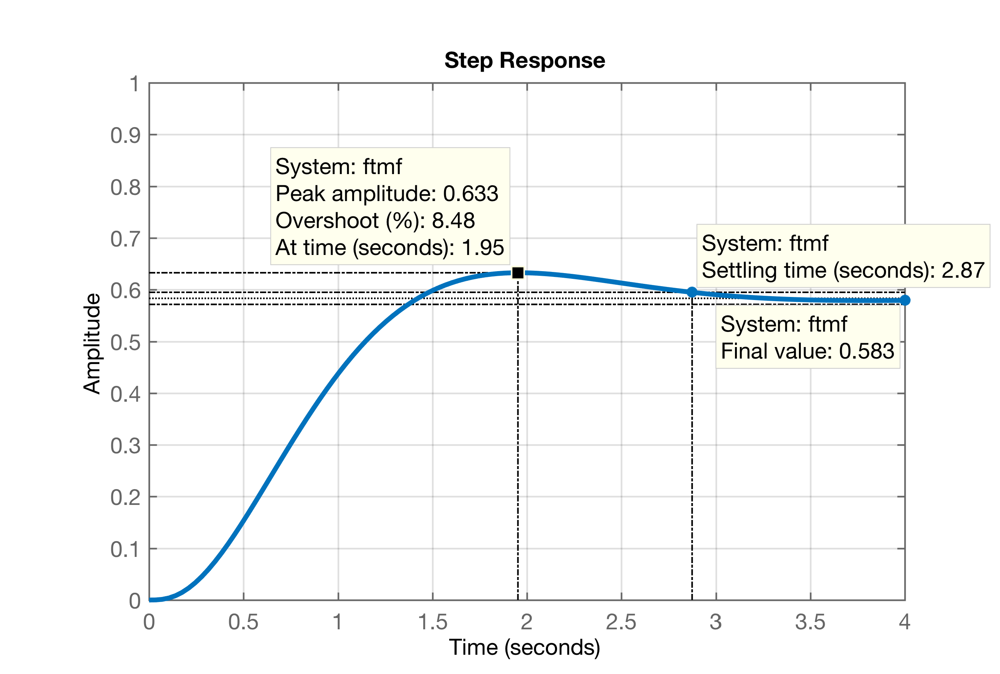

Projeto de PI usando Contribuição Angular
Aula de 14/05/2021
Continuando seção de trabalho anterior:
xxxxxxxxxx>> pwd % lembrando pasta de trabalho...ans =~/Documents/MATLAB/controle2_info>> what % arquivos compatíveis com Matlab nesta pastaMAT-files in the current folder ~/Documents/MATLAB/controle2_infoplanta >> format compact % compactar informações na tela>> load planta % carregando info anteriores, planta, etcObs.: arquivo planta.mat disponível aqui.
Na aula anterior, foi definido um local para o zero do PI em função do estudo realizado difentes RL's (gráficos de Root Locus ou gráficos de lugares geométricos das raízes) conforme variava a posição do zero do PI. Foram realizados apenas esboços. Mas obter estes gráficos usando Matlab?
Lembrando a eq. da planta:
xxxxxxxxxx>> zpk(G) 1------------------ (s+10) (s+2) (s+1)Continuous-time zero/pole/gain model.Na aula passada 3 opções foram levantadas:
- Entre o pólo lento da planta (em ) pólo integrador (em );
- Entre os 2 pólos dominantes da planta: ;
- Afastando-se mais do eixo : .
Os gráficos reais dos RL's para estes 3 casos pode se facilmente obtido no Matlab fazendo-se:
| Opção 1: | Opção 2: ; |
|---|---|
| Código: >> aux_ftma_PI1 = tf( poly(-0.5), poly( [0 -1 -2 -10] ) ); >> zpk( aux_ftma_PI1 ) >> figure(1); rlocus( aux_ftma_PI1 ) >> hold on; sgrid( zeta, 0 ) >> axis( [-12 2 -4 4] ); | Código: >> aux_ftma_PI2 = tf( poly(-1.5), poly( [0 -1 -2 -10] ) ); >> zpk( aux_ftma_PI2 ) >> figure(2); rlocus( aux_ftma_PI2 ) >> hold on; sgrid( zeta, 0 ) >> axis( [-12 2 -4 4] ); |
| Opção 3: | |
| Código: >> aux_ftma_PI3 = tf( poly(-6), poly( [0 -1 -2 -10] ) ); >> zpk( aux_ftma_PI3 ) >> figure(3); rlocus( aux_ftma_PI3 ) >> hold on; sgrid( zeta, 0 ) >> axis( [-12 2 -4 4] ); |
Obs.: Um clique com o botão direito do mouse sobre as figuras na tabela pode fazer surgir a opção de verificar cada um dos RL's, em maiores detalhes, numa nova aba do navegador (cada figura isoladamente)! Note que propostitalmente os 3 RL's abrangem a mesma região no plano-s (garantido através da instrução axis(), idêntica para os 3 RL's ).
Na aula passada, analisando os esboços destes RL's se conclui que a opção 1 parece ser a opção que garante pólos complexos (e dominantes) mais afastados do eixo , e portanto, resultam num PI com menor .
Mas a questão nesta aula é: -- E se não quiseremos realizar esta análise? -- Existe algum outro método mais determinístico para determinar o local do zero do PI?
Lembrando que existe uma regra para traçado de RL's que afirma que para que um certo ponto faça parte do traçado do mesmo, o ângulo formado entre entre ponto e os pólos e zeros presentes na para o qual está sendo traçado o RL deve respeitar a seguinte regra:
Então se soubermos onde deveriam estar os pólos de MF para garantir a resposta sub-amortecida da forma esperada, podemos aplicar esta regra para determinar, neste nosso caso, o ângulo do zero do PI e consequentemente sua posição no plano-s.
Maiores detalhes (com gráficos) sobre o que se pretende realizar aparecem no seção “Projeto de PI usando contribuição angular” de Projeto de PI (por contribuição angular) + Lag (recomenda-se sua leitura).
Anteriormente já havia sido definido o seguinte requisito de controle:
mas ainda não havia sido definido nenhum critério temporal, necessário para que, juntamente com possamos calcular a posição que os pólos complexos de MF deveriam assumir no plano-s para garantir o formato de resposta desejado.
Lembrando do do Controlador Proporcional temos:
xxxxxxxxxx>> figure; step(ftmf)

Considerando que nenhum controlador com ação integral consegue ser mais rápido que o controlador proporcional, vamos realizar o projeto de um PI usando contribuição angular, tentando fazer segundos (Note que em Exemplo (Aula de 20/05/2020), foi adotado segundos).
De posse do (e o correpondente já calculando anteriormente) e mais este parâmetro temporal podemos agora determinar onde os pólos de MF complexos deveriam ficar localizados no plano-s:
xxxxxxxxxx>> t_s_d=3; % valor desejado para tempo de assentamento do PI>> OS % lembrando do %OS adotado anteriomenteOS = 10>> zeta % correspondente fator de amortecimentozeta = 0.5912>> wn = 4 / (zeta*t_s_d) % calculando freq. natural de oscilaçãown = 2.2555>> wd = wn*sqrt(1-zeta^2) % calculando parte imaginária dos pólos de MFwd = 1.8192>> sigma = -wn*zeta % calculando parte real dos pólos de MFsigma = -1.3333>> polos_mf=[sigma+i*wd sigma-i*wd] % compondo um vetor com os pólos de MFpolos_mf = -1.3333 + 1.8192i -1.3333 - 1.8192iCriando então uma FTMA(s) temporária do PI, necessário para compor um gráfico no plano-s mostrando como se dá o cálculo da contribuição angular neste caso. Note que no momento ainda sem o zero, ou seja, resulta um controlador de pura ação integral:
xxxxxxxxxx>> C_PI2_aux=tf(1, [1 0])C_PI2_aux = 1 - sContinuous-time transfer function.>> ftma_PI2_aux=C_PI2_aux*G;>> zpk(ftma_PI2_aux) 1-------------------- s (s+10) (s+2) (s+1)Continuous-time zero/pole/gain model.>> figure; pzmap(ftma_PI2_aux) % começando a plotar o gráfico do plano-s>> hold on;>> plot(polos_mf, 'r+') % acrescentando os pólos desejados de MF>> axis([-10 2 -2 2]) % ajeitando a região plotada do plano-sO plano-s mostrando as contribuições angulares resulta então em:
Obs.: a figura anterior já mostra os ângulos, calculados no próximo passo:
Seguindo com o cálculo dos ângulos dos pólos, aplicando a regra do RL e calculando então o ângulo do zero e sua posição no plano-s:
xxxxxxxxxx>> theta1=atan2(wd,sigma) % Note, o Matlab trabalha em radianos e não em graustheta1 = 2.2033>> theta1_deg=theta1*180/pitheta1_deg = 126.2390>> theta2=atan2(wd,sigma-(-1))theta2 = 1.7520>> theta2_deg=theta2*180/pitheta2_deg = 100.3833>> theta3=atan2(wd,sigma-(-2))theta3 = 1.2195>> theta3_deg=theta3*180/pitheta3_deg = 69.8737>> theta4=atan2(wd,sigma-(-10))theta4 = 0.2069>> theta4_deg=theta4*180/pitheta4_deg = 11.8545>> axis equal % forçando Matlab a usar mesma escala (proporção) nos eixos X e Y>> sum_theta=theta1+theta2+theta3+theta4sum_theta = 5.3817>> sum_theta_deg=sum_theta*180/pisum_theta_deg = 308.3506>> theta_zera=360-sum_theta_deg % ângulo do zero (sentido horário = 360^o - X^o)theta_zera = 51.6494>> theta_zero=2*pi-sum_thetatheta_zero = 0.9015>> delta_x=wd/tan(theta_zero)delta_x = 1.4393>> zero_PI2=sigma+delta_xzero_PI2 = 0.1060A contribuição angular final fica:
Note: foi calculado um zero instável (no semi-plano direito positivo do plano-s)... Isto significa que esta planta em MF, ficará instável a médio ou longo prazo.
Talvez a dúvida agora seja: -- Por que foi gerado um zero instável? Resposta: algebricamente, para o RL passar no ponto desejado, respeitando o e especificados, o zero deste PI teria que ficar localizado nesta posição, deixando o sistema instável em MF. Isto simplesmente significa que não forma de fazer um PI para este sistema reagir com segundos. A proposta foi algo "ousada" para este sistema. Possivelmente se houvesse sido adotado segundos ou segundos como realizado neste exemplo, não encontraríamos problema e teríamos encontrado um zero estável para o PI.
Conclusão: à rigor deveriámos re-definir um valor plausível para (talvez 3,5 segundos).
Mas... continuando o desenvolvimento deste projeto, apenas para comprovar o comportamento instável deste sistema, como consequência do zro instável, teremos:
xxxxxxxxxx>> C_PI2=tf([1 -zero_PI2],[1 0])C_PI2 = s - 0.106 --------- sContinuous-time transfer function.Seguimos o projeto como se estivesse tudo bem...
xxxxxxxxxx>> ftma_PI2=C_PI2*G;>> zpk(ftma_PI2)ans = (s-0.106)-------------------- s (s+10) (s+2) (s+1)Continuous-time zero/pole/gain model.>> figure; rlocus(ftma_PI2); % desenhando o RL para encontrar o ganho deste PI>> hold on; sgrid(zeta,0); % sobrepondo linha guia do zeta constante>> plot(polos_mf, 'r+') % sobrepondo os pólos de MF no RL já traçado>> [K_PI2,polosMF]=rlocfind(ftma_PI2) % encontrando o ganhoSelect a point in the graphics windowselected_point = -1.3308 + 1.8157iK_PI2 = 30.7540polosMF = -10.3940 + 0.0000i -1.3339 + 1.8162i -1.3339 - 1.8162i 0.0617 + 0.0000iSegue gráfico do RL mostrando que cálculos da contribuição angular estão corretos:
Fechando a malha...
xxxxxxxxxx>> ftmf_PI2=feedback(K_PI2*ftma_PI2, 1); % calculo da FTMF(s)>> figure; step(ftmf_PI2) % gráfico da resposta ao degrau>> % Note que o sistema fica instável>> % reduzindo escala da resposta para verificar parte inicial da resposta>> axis([0 30 -1 1.2]) % mostrando os primeiros 30 segundosGráfico da resposta ao degrau:
Comprovamos que o sistema até inicia um comportamento de MF algo similar a um sistema sub-amortecido, mas logo após um pico de resposta positivo, a amplitude de sinal da planta começa a diminuir, na prática: , isto é, o sistema fica instável (ocasionado pelo zero instável do controlador).
Encerrando seção de trabalho no Matlab:
xxxxxxxxxx>> save planta>> diary off>> quit()Se você deseja verificar como ficaria o cálculo da contribuição angular adotando segundos, recomenda-se verificar a página: Projeto de PI (por contribuição angular) + Lag ou Exemplo (Aula de 20/05/2020).
That's all folks... 
🎶 Fernando Passold, em 14.05.2021